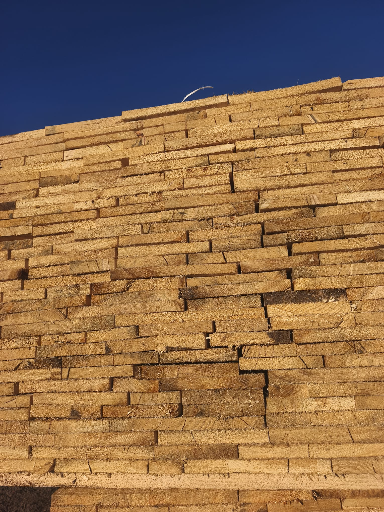

Scândură nedimensionată

Alege dimensiunile
Cere ofertăLățime variabilă; desenul este orientativ. Confirmăm lățimile la ofertare.
Despre material
- Esență
- Brad și molid
- Prelucrare
- Lemn brut
- Stare
- Verde sau uscat natural
- Margini
- Neregulate; lățimea variază de-a lungul piesei.
- Unitate de vânzare
- Metru cub m³
- Utilizări
- Cofraje și alte lucrări de construcții în care se poate folosi material cu lățimi variabile.
- Documente
- Certificat de calitate și declarație de conformitate, la cerere, în funcție de produs și lot.
Scândură de 2,5 cm.
Cu margini neregulate.
La Lemne oferă scândură nedimensionată din brad și molid, pentru cofraje și lucrări în care poate fi folosit material cu lățimi variabile. Lemnul este brut, disponibil uscat natural sau verde. Confirmăm materialul în funcție de cerințele lucrării și de cantitatea de care ai nevoie.
2,5 cm grosime, lungimi de 3–6 m.
Grosimea confirmată este de 2,5 cm. Poți alege lungimi de 3, 4, 5 sau 6 m, în timp ce lățimea rămâne variabilă. Marginile sunt neregulate, iar lățimea poate diferi atât între piese, cât și de-a lungul aceleiași piese.
Din acest motiv, desenul produsului este orientativ, iar configuratorul nu promite o lățime exactă. Spune-ne ce lățimi sunt potrivite pentru lucrarea ta și trimite cantitatea necesară pentru a confirma materialul disponibil.
Alege după cerințele cofrajului sau ale lucrării.
Scândura nedimensionată poate fi inclusă în necesarul de cofraje pentru elevații și alte lucrări care acceptă lățimi variabile. Dacă ai nevoie de lățimi precise, vezi scândura dimensionată, de 10, 15, 20, 25 și 30 cm. Pentru grosimea de 5 cm există separat gama de dulapi; nu o confundăm cu scândura de 2,5 cm.
La cerere, putem oferi certificat de calitate și declarație de conformitate, în funcție de produs și lot. Spune-ne ce documente solicită proiectul, pentru a le confirma înainte de comandă.
Preț corect pentru necesarul tău.
Scândura nedimensionată se vinde la m³. Pregătim oferta după lungimi, cantitate și cerințele materialului, cu un raport corect între calitate și preț. Pentru volume mai mari putem oferi discount. Îți precizăm prețul, TVA-ul și transportul, ca să cunoști costul necesarului tău.
Livrare în vestul țării și în România.
Din Sânnicolau Mare livrăm scândură nedimensionată în Timișoara, Arad, Oradea, Reșița și Deva, precum și în localitățile din județele Timiș, Arad, Bihor, Caraș-Severin și Hunedoara. La nevoie, putem livra oriunde în România.
Oferim transport basculabil, cu un cost stabilit după cantitate și distanță. Pentru anumite comenzi transportul poate fi gratuit; confirmăm condițiile la ofertare. Trimite-ne necesarul și localitatea de livrare pentru calculul costului total.
Întrebări frecvente.
De ce metri cubi de scândură nu înseamnă automat o suprafață gata de cofrat?
Volumul descrie cantitatea de material, nu suprafața finală a unui cofraj. La scândură nedimensionată, ajustarea marginilor, alegerea pieselor și tăierile reduc suprafața efectiv utilizabilă. Pentru scândură de 2,5 cm, raportul geometric este de 40 m² la 1 m³, înaintea pierderilor; acesta nu este un randament garantat al lotului și nu înlocuiește lista de materiale.
La cofrajele pentru elevații calculez o singură față a peretelui?
Dacă soluția din proiect prevede cofraj pe ambele fețe, calculezi fiecare față separat. De exemplu, un tronson drept de 10 m lungime și 0,60 m înălțime are 6 m² pe o față și 12 m² pe două fețe. Este doar aria fețelor: capetele, colțurile, rigidizările și resturile de tăiere se evaluează separat. Nu dubla automat suprafața acolo unde proiectul prevede altă soluție.
Cum reduc rosturile când folosesc scândură pentru cofraje cu margini neregulate?
Planifică împreună cu executantul alegerea și ajustarea pieselor înainte de montaj. Marginile naturale nu asigură o îmbinare continuă între două scânduri alăturate. Soluția pentru rosturi și etanșare trebuie stabilită în alcătuirea cofrajului, împreună cu rigidizarea și prinderile. Dacă lucrarea cere muchii drepte și repetabile, compară necesarul cu scândura dimensionată, incluzând și pierderile de pregătire.
Cum organizez scândura rămasă între două etape de lucru?
Separă piesele recuperabile de resturile cu cuie sau deteriorări și grupează-le după lungime. Păstrează materialul pe suporți, ferit de sol și de apa care băltește. Acoperă-l împotriva ploii, cu spațiu pentru circulația aerului. O stivă ordonată te ajută să verifici ce scândură pentru cofraje mai ai efectiv, înainte să comanzi completarea.